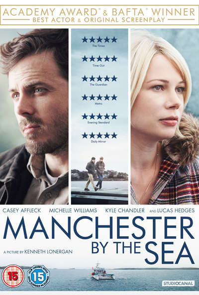

OSCAR WINNER
Casey Affleck is now an Oscar winner,
thanks to his performance in
Manchester by the Sea.
The newly-crowned best actor
has long been the front-runner
in this category, picking up
numerous statuettes over the
course of awards season of his work
as a heartbroken man taking care
of his nephew in a small Massachusetts town.
And on Sunday night, his long awards
circuit journey finally reached
the glittering finish line.
"This means so much to me, thank you",
he said at the start of his speech.
OTHER NOMINIES
Affleck was up against Denzel Washington(Fences),
Andrew Garfield(Hacksaw Ridge), Ryan Gosling(La La Land)
and Viggo Mortensen(Captain Fantastick).
Washington, a two-time Oscar winner who
starred in and directed Fences,
was Affleck's main competition throughout
awards season, picking up a
surprise Screen Actor's Guild Awards
that shook up predictors and had some
believing he might be able to pull off
a last-minute win. But in the end, Washington's
fierce performance wasn't enough to
sway voters who had their hearts set on Affleck.
In his acceptance speech, Affleck
specifically mentioned Washington by name.
"One of the first people who taught me
to act was Denzel Washington and I just met
him tonight for the first time. Thank you.”
Manchester by the Sea
- Director: Kenneth Lonergan
- Writer: Kenneth Lonergan
- Stars: Casey Affleck, Michelle Williams, Kyle Chandler
User reviews
"I was very pleased to snag a last minute returned,
lone available ticket to the European premiere
of this on Saturday as I'd heard a lot of
great things about this film and it had been
sold out".
The premise is simple: when his brother Joe
dies, Lee Chandler (Casey Affleck) is forced to
take care of his teenage nephew in his
hometown, from which he moved away years
earlier to escape his demons from a trauma years earlier.
